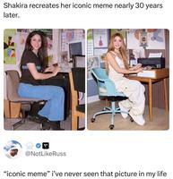

0
Less than a year ago he was the #1 richest man in the world. 10 weeks ago he was #2. But yesterday Larry Ellison dropped to #8, Forbes reports, falling behind Nvidia CEO Jensen Huang.
Ellison's net worth is now estimated at just $192.6 billion — after a $104 billion decline:
Shares of Oracle plunged roughly 54% between hitting a high of just over $250 on June 1 to a low of $114.50 on July 28, though the stock rebounded slightly to $150.52 as of Friday.
A decline followed Oracle telling investors it expected to raise $40 billion through debt and equity financing, with capital expenditures surging 162% to $55.7 billion and spending expected to top $95 billion by fiscal 2027. Jacob Bourne, an analyst at eMarketer, told Reuters there are broader concerns about how Oracle would fund its capital spending to match its revenue projections, and Bank of America analysts separately flagged in a note cautioning that more than 50% of Oracle's remaining performance obligation comes from OpenAI. Melius Research analysts wrote last month that Oracle's spending plans may not hold if OpenAI or Anthropic demands more computing capacity. S&P Global also downgraded Oracle's credit rating in July, arguing the firm's "rapidly expanding" AI infrastructure business could pay off, but may be too expensive and could weaken Oracle's financial position in the meantime.
$443 billion. That's how much Oracle's market valuation has dropped since peaking at $877.1 billion in September, hitting $433.5 billion as of Friday... Oracle, once viewed as a potential winner of the booming AI infrastructure buildout, has since raised concerns among investors who appear to view the firm as taking on too much financial risk to fund its projects. Wall Street has cautioned that mega-cap tech firms may be taking on too much spending to match growing demand for AI products, with firms like Amazon expecting to spend more than $200 billion. Oracle's backlog has exploded to $638 billion, but more than half is reportedly associated with OpenAI, and some analysts have cautioned that most of those funds may not be guaranteed.
Read more of this story at Slashdot.
0
"The European Union's Copernicus climate monitoring service confirmed Monday that June and July were the hottest on record in western Europe," .according to a report from the CBC. "The period saw an estimated 25,000 heat-related deaths."
CNN has before-and-after photos of Europe's dried rivers, calling it "a crisis so dire it can be seen from space"
River levels are so low that commercial ships have had to reduce their loads by as much as 80% to avoid running aground. It's disrupting supply chains and making shipping more expensive.
Other effects of Europe's drying rivers
The BBC reports that Romania has "shut down its only nuclear power station because of extremely low water levels in the Danube river."
A bridge built in the year 39 AD by the Roman emperor Caligula "is usually entirely underwater," reports CNN, but this year full blocks of the ancient structure are visible, giving archaeologists a rare opportunity to study it." The reports adds that drying Tiber has also now also revealed formerly submerged e-bikes, scooters, refrigerators and a car."
The CBC reports a dozen Nazi warships scuttled in a river during the Second World War are now resurfacing as water levels plunge. "Elsewhere, the drying Danube has revealed a German military motorcycle in Hungary, an unexploded 700-kilogram British bomb in Slovakia, and what are believed to be the ancient remains of a mammoth in Bulgaria."
Read more of this story at Slashdot.
Astronomers using the James Webb Space Telescope say they may have found a new class of object: a "black hole star," in which a black hole is wrapped in dense gas and radiates in ways that resemble an enormous star. The Guardian reports: The international team made the breakthrough after focusing their attention on a mysterious red spot in images of the early universe captured by Nasa's James Webb space telescope. The object was lurking in the constellation of Cetus, the Whale, billions of light years from Earth. It is thought to have formed 660m years after the big bang, astronomers' leading theory as to how the universe began. Measurements of the exotic body found that while it resembles an immense star, it releases 100bn times more energy than any known star can produce. The energy output is far closer to that observed from black holes than stars. The findings have been published in the journal Nature.
Read more of this story at Slashdot.
Meta has patented a smart-glasses system that could use facial recognition to identify people and automatically create personalized highlight reels of events such as dinner parties. The patent doesn't guarantee the feature will ship, but it offers a detailed look at how Meta is exploring facial recognition and AI-powered memory capture for its wearable devices. 404 Media reports: "I've generated some highlights of tonight's dinner party. Would you like to see them?" a prompt from the system says, alongside various thumbnails of what look like people laughing, according to one illustration in the patent. One section says the system may personalize highlight files using "user relationship data." The illustrations clearly show a person wearing a pair of glasses, looking at a group of people, then the glasses focusing on one or more people in particular.
Patentlyze, an organization that tracks patents, first alerted 404 Media to the patent on Friday. The patent is dense with how such a system would work, but in sum, the system with one or more cameras receives an input from the user, then uses machine-learning and "sensory data" to figure out points of interest in the camera's field of view. That can include detecting people in the shot "based on one or more facial recognition algorithms," identifying those specific people, detecting their facial expressions, using "eye gaze data of the user captured by the client system," and figuring out other points of interest "based on scene and semantic understanding."
Although the patent is for "particular camera-based tasks by particular systems in a particular manner" -- in this case, the company's smart glasses -- Meta writes it "contemplates assisting users in any suitable camera-based task by any suitable system in any suitable manner." Meaning that although this technology is focused on the glasses, maybe the company will use it for other purposes in the future.
Read more of this story at Slashdot.
"An engineering director at Google said four years ago that AI would deliver a four-day work week by 2025," remembers the BBC. And earlier this year OpenAI "formally urged companies to start testing out a four-day work week (with no change in pay), claiming that AI will soon be able to speed up so much human labour that the corporate world should prepare itself."
However, a former OpenAI technical employee who left the company last year told the BBC the firm never actually trialled the four-day work week it suggested others should try while they were there. Instead, the person described what was often a gruelling work culture marked by frequent "crisis meetings", working on weekends, and "super cut-throat" performance reviews that would see colleagues suddenly let go... [T]he former OpenAI employee said they would put in at least 70 hours a week, much more than they did in previous tech jobs...
Other companies have also pushed the idea that AI will effectively reduce the number of hours people need to work, for better or worse. [At OpenAI and Anthropic] sprints can stretch on for many weeks and top 90 hours of work in a seven-day period, tech workers that the BBC spoke to for this story said... At Meta, workers said they have been abruptly pushed onto teams this year doing AI work being treated as urgent... The hours on such teams at Meta are often long, with staff working into the night, on weekends, and feeling they are "on call" during the hours they are not working, according to descriptions of the work from the current and former employees...
Some new research suggests that AI tools are making people's workloads even more burdensome. A study out of UC Berkeley followed hundreds of workers at a US tech company for eight months as they used AI. It found the employees "worked at a faster pace, took on a broader scope of tasks, and extended work into more hours of the day"... The UC Berkeley research found that the workload of tech employees was expanded in part because of the need to constantly check the output of AI tools.
In the article Neil Thompson, an innovation scholar at MIT, pointed out a problem with estimates that AI will ease the workload on humans. "People assume that 20% less work means four-day weeks. But new work emerges."
The BBC also points out helpfully that "there are no limits in the U.S. on how many hours a person over the age of 16 can work." (While in the UK and Europe, "laws limit a working week to 48 hours, including overtime.")
Thanks to long-time Slashdot reader hadleyburg for sharing the article.
Read more of this story at Slashdot.
This week Meta CEO Mark Zuckerberg published a 6,500 word open letter titled "The Future is for Everyone".
But the BBC is more interested in why big tech executives keep writing manifestos about AI:
[Zuckerberg's] vision echoes what AI leaders have expressed in various forms: the product they are building is among the "most important technologies in history." Marc Andreessen, co-founder of early web titan Netscape, perhaps started this trend in 2023 with a 5,000-word essay he called "The Techno-Optimist Manifesto", which argued innovation was the way to solve life's problems...
As the International Monetary Fund warns AI could affect nearly 40% of jobs and worsen global financial inequality, Zuckerberg says he believes there will be an abundance of jobs in the future. "I do not understand why anyone who believes that AI will eliminate most jobs and much of humanity's relevance would rush to build that future." Never mind that Zuckerberg's Meta has cut 10% of its global workforce — about 8,000 jobs — as the company reorganizes to focus on AI.
Zuckerberg's manifesto is the latest to land in our social media feeds in an effort to put a positive spin on AI. In 2024, ChatGPT-maker OpenAI boss Sam Altman released a manifesto called "The Intelligence Age", a sweeping expression of optimism about the tech's potential... That same year, in a manifesto titled "Machines of Loving Grace", Anthropic CEO Dario Amodei touted the potential of AI to transform everything from healthcare to politics.
So what's going on with these tech executives' manifestos? Economics blogger Noah Smith suggested to the BBC "they all feel like it's such an important moment that it's incumbent upon them to do whatever they can to shape the direction that this technology is going." Although he does see some value in their engagement with important issues. "Should we open-source something that has the ability to kill humanity? If you don't take that seriously, you're just a fool."
But Rob Lalka, a business professor at Tulane University, had a different explanation for the BBC:
Lalka said the timing of Zuckerberg's manifesto coincides with rising anger over AI's impact on everything from jobs to the environment.
And while tech journalists and academics might pore over them trying to glean nuggets of meaning, these executive manifestos are not necessarily landing with the general public. "They're trying to make the case that the positives will far outweigh some of those negatives that the public backlash is pointing out," he said. "But I think a lot of the reasons for optimism are still yet to be seen."
Read more of this story at Slashdot.
joshuark shares a report from Ars Technica: Dutch officials have warned that a high-severity macOS vulnerability that allows attackers to execute malicious code is under active exploitation. "The NCSC has received a notification indicating that active abuse of this vulnerability has been observed on multiple systems on which port 5900 was accessible from the Internet," the Netherlands National Cyber Security Centrum warned earlier this week. "In all these cases, root had been accessed on the affected system and a Monero crypto miner had been placed."
The vulnerability, tracked as CVE-2026-65400, received a patch from Apple last week for macOS Tahoe, Sequoia, and Sonoma. The vulnerability, with a severity rating of 7.1 out of 10, stems from a bug in the macOS screen sharing capability, which allows a remote party to view the screen and control the keyboard and mouse while a machine is turned on. A flaw in the "state management," which keeps track of preceding events, user interactions, variables, and other system states, is the underlying cause. A video of the exploit in action can be found here. Details of CVE-2026-65400 became public at last week's Black Hat security conference. Apple said last week that CVE-2026-65400 "may" allow an attacker without credentials to gain access to a Mac. It's unclear why Apple hedged, but softening language is common among most tech developers when disclosing vulnerabilities.
As noted by the NCSC, the vulnerability is being exploited when port 5900 is exposed to the Internet. When screen sharing is turned on, the macOS firewall opens the port. Routers and dedicated firewalls generally block the port unless configured to override that setting. Security practitioners generally advise Mac users to keep the port closed even when using screen sharing and to instead connect over a VPN or through SSH tunneling. The alternatives require actions that aren't within the capabilities of most users. The safest practice is to block screen sharing, enable it only when screen sharing is needed, and to turn the feature off once a session has ended. Screen sharing can be turned on or off by accessing System Settings > General > Sharing and toggling the switch for Screen Sharing. Of course, installing last week's security update is also a must. Sharing is not caring.
Read more of this story at Slashdot.
An anonymous reader quotes a report from The New York Times: At a BMW factory in South Carolina, a human-shaped robot with a screen for a face recently stepped from a charging station toward a stack of green plastic boxes. It grasped an auto part from one of the boxes, pivoted, placed the part in a trolley, then pulled the trolley across the floor. The robot's slow, stiff movements suggested a worker with a bad hangover rather than a technological revolution. "They're still slower than humans," Ulrich Wieland, a BMW vice president in charge of logistics at the factory, in Spartanburg, told reporters invited to see the robot in June. But, he added, "they're advancing fast."
Automakers have used robots for decades, but they are usually powerful, one-armed machines that are fixed in place and perform repetitive tasks like welding body frames or applying adhesives to door panels. Now, most major automakers are betting that robots designed to resemble human beings, known as humanoids, will usher in a new wave of automation and efficiency. Equipped with artificial intelligence, they are expected to move around and do tasks now done by humans without any modifications to factories or heavy equipment.
Unlike most of the robots now in use, humanoids would respond to voice commands and theoretically solve problems and react to unforeseen events. They would never take a lunch break, join a union or require health insurance. To optimists, robots could rescue U.S. manufacturing by increasing productivity, solving shortages of skilled workers and giving Western carmakers a fighting chance at competing with Chinese rivals that enjoy lower costs. Boring but important jobs like sorting parts would be done by robots, freeing humans for more interesting and specialized work.
Read more of this story at Slashdot.
Former Cambridge professor Jason Arday, who resigned last week amid allegations of plagiarism and questions about his academic record, has been found dead at age 41 in London. The BBC reports: Jason Arday was found "unresponsive" at an address in Battersea, south London, on Friday afternoon, emergency services said. Metropolitan Police officers were called by the London Ambulance Service. A 41-year-old man was pronounced dead at the scene and his next of kin have been informed, the force said.
Arday resigned as a Cambridge professor of sociology of education last week after allegations of plagiarism and questions about some of his achievements. He had denied the claims.
In a statement, the Met Police said: "At this time his death is being treated as unexpected, but is not believed to be suspicious." The 41-year-old academic had denied any plagiarism - but admitted errors in his work - and last week said the recent furore had led to "an unrelenting level of public scrutiny and personal attack." The row first erupted after another academic -- self-defined "race realist" Nathan Cofnas, who was sacked from his Cambridge role in 2024 -- said he found numerous instances of plagiarism in Prof Arday's work and questioned some of his stated achievements.
[...] Announcing his resignation last week, Arday said the "personal cost" of the scrutiny had become "too great." He said: "While criticism is an inevitable part of academic life, what I have experienced has gone far beyond scholarly disagreement. "The relentless accusations, speculation and public commentary have taken a profound toll on me and on those I love." He stressed that his resignation should not "be mistaken for an acceptance of the narratives that have surrounded me."
Read more of this story at Slashdot.
Flock Safety is tightening controls on its nationwide license plate reader network after mounting backlash over privacy and documented police misuse. By January 1, law enforcement customers will be required to use automated auditing, tie searches to specific case numbers, and accept a shorter seven-day default retention period. Critics, including the ACLU, argue the changes still leave too much surveillance power in police hands. The Associated Press reports: In an interview, Flock CEO Garrett Langley said many of the product changes will make what were once optional guardrails mandatory for its users to implement by Jan. 1. Among them: All law enforcement customers will have to implement an audit tool that's intended to flag abnormal search behavior. When the system detects abnormal behavior, the user would be locked out pending an internal review, the company said in a description of the changes provided ahead of Thursday's announcement.
Flock, which says its customers own the data that the cameras record, is also shortening the standard data retention window from 30 days to seven. It said it will allow data to be preserved for longer when it is evidence tied to a case number. Law enforcement users will now also be required to enter a code from their records management system tying each search to a specific case before it is run, something Langley said civil liberties advocates have long been calling for. Overrides for emergencies would be automatically flagged for review, the company said.
Customers will also be allowed to decide which offense types -- such as homicide or arson -- outside agencies can search their data for, which would allow a customer to block outside searches related to immigration enforcement, the company said. Langley said that change will give individual cities and departments control to use the system in a manner "consistent with community values." Critics say Flock's changes don't address the core problem: police can still decide for themselves when and whom to search without judicial oversight. The ACLU called the shorter data-retention period "a step in the right direction," but dismissed the other safeguards as "retreads" of inadequate protections, while Institute for Justice attorney Robert Frommer called the reforms "window dressing" from a company in "panic mode."
He argued that searches should instead be approved "by judges with real warrants."
Read more of this story at Slashdot.
France's Constitutional Council has struck down a law that would have banned children under 15 from social media, ruling that it disproportionately restricted freedom of expression and lacked adequate privacy safeguards around age verification. President Emmanuel Macron has asked the government to rewrite the measure, with the goal of putting a revised version in place before spring 2027. Reuters reports: "The Council holds that the contested provisions, on the one hand, disproportionately infringe upon the freedom of expression and communication and, on the other, fail to provide the legal safeguards necessary to ensure the right to respect for private life," it said.
French lawmakers had approved the bill in July, becoming the first in Europe to follow Australia, whose world-first ban barred access to platforms including Facebook, Snapchat, TikTok and YouTube for under-16s in December. Lawmakers there are considering stricter penalties after data showed mixed success.
Countries around the globe, including China, the United Arab Emirates and Turkey, have either instituted measures intended to curtail or bar access to social media for young people, or have said they were planning them. The European Union has said it was planning to seek stronger protections for children from harmful social media features.
Read more of this story at Slashdot.
An anonymous reader quotes a report from Ars Technica: After its cloud storage provider went defunct, a PBS affiliate decided to sue a data center provider to regain access to 50TB of TV shows, videos, and other data dating back 70 years. As reported this week by Current, a trade newspaper covering public broadcasting, St. Louis affiliate Nine PBS filed a lawsuit against Iron Mountain Data Centers on July 28, seeking access to the data. In the litigation filed in Denver District Court, Nine PBS says that its cloud storage provider, Open Source Storage (OSS), used one of Iron Mountain's Denver data centers to store the channel's data. However, OSS is being unresponsive, and Nine PBS says Iron Mountain has refused to release its data.
The data in question includes the station's coverage of the COVID-19 pandemic, East St. Louis' history, The Great Flood of 1993, and over 11,000 files, The Denver Post reported in July. The lawsuit claims that "most" of the data is "unique and irreplaceable," according to the Post. Last month, a judge blocked Iron Mountain from deleting or modifying the data.
In a hearing on Wednesday, a judge ruled that Iron Mountain must hand over any physical devices holding the data, Current reported today. The judge also said that Nine PBS must find a third party, such as a former OSS worker, who can help retrieve the data within 30 days and without sharing or corrupting data belonging to other OSS clients. Nine PBS is already communicating with a former OSS employee "who is willing to help," the report said. If complications arise, such as from the data being encrypted, another hearing will be scheduled. Nine PBS and Iron Mountain must provide updates by September 14. Iron Mountain's spokesperson said the company only provides physical infrastructure, such as the building, network connectivity, power, and environmental controls. "Our customers rent space for their servers and other hardware. These are the client's assets. We don't have access to the data on the hardware/servers because they belong to our customers," the company said.
If it granted "unauthorized access to third-party hardware without a court order," Iron Mountain said the company would violate basic data privacy protocols, breach its contract with OSS, and "potentially [expose] confidential data belonging to other clients of OSS."
Read more of this story at Slashdot.
Longtime Slashdot reader AmiMoJo shares a report from Kyiv Post: Ukraine's military intelligence (HUR) has identified an Nvidia Jetson Orin computer module inside Russia's new S-71 Monochrome air-launched cruise missile, potentially indicating the use of artificial intelligence technology in the weapon, the agency said Wednesday, Aug. 12. The finding was published in the 'Components in Weapons' section of the HUR's War&Sanctions portal, which documents foreign electronic components found in Russian weapons used against Ukraine.
The latest research identified 35 electronic components in Russian weapons, according to the HUR. HUR specialists identified the Nvidia Jetson Orin module in the S-71 Monochrome, a new Russian air-launched cruise missile. The agency said the use of the computer module may indicate the integration of artificial intelligence technologies into the missile. The HUR did not provide further details on the specific functions performed by the Nvidia module in the weapon.
Read more of this story at Slashdot.
It's not just RAM prices that are going up, writes CNET. "Reports suggest the cost of Windows licenses for manufacturers is rising by up to 10%."
Several sites that closely follow Microsoft news, including Windows Central and Windows Latest, have published articles citing a report from Taiwan's Economic Daily News that claims some PC manufacturers are seeing a 7% to 10% increase in the cost of Windows 11 licenses...
Because they buy licenses in bulk, they get a sizeable discount over what a consumer would pay for a new copy of Windows 11. But given the existing cost pressures from other components, a big Windows 11 price hike could lead them to pass on some of the added cost to PC buyers. According to the EDN story, PC makers could raise prices by about 5% over the next quarter due to the reported Windows price hike. .. A translated version of the Economic Daily News article contains information from an unnamed PC brand executive. It says that while Microsoft typically raises licensing costs every year by single-digit percentages, that hike has reached 7% to 10% this year, a significant increase.
"A representative for Microsoft declined to comment on the report," according to the article.
But it also notes that three weeks ago laptop maker Framework blamed price hikes and reconfigurations for some of their models on processor, memory, storage, "and other silicon costs — but also "an increase in Windows license costs."
Thanks to Slashdot reader joshuark for sharing the article.
Read more of this story at Slashdot.
A federal judge has ordered Google to remove what he called "anticompetitive friction" that makes rival Android app stores harder to find and install. The order is part of the remedies stemming from Epic's antitrust victory, which already requires Google to carry competing app stores inside Google Play and give them access to its app catalog. The Verge reports: It's been nearly three years since a jury unanimously decided that Google had an illegal monopoly over Android apps, and almost two years since Judge James Donato decided the best way of undoing that monopoly would be to crack open Android app distribution. Donato ordered Google to carry rival Android app stores inside its own Google Play Store, and to provide rivals with complete access to Google's full catalog of apps, for several years.
But Epic argued that Google is still making it too difficult to install rival app stores, showing the entire courtroom a live demo of how many steps it currently takes -- and Judge Donato agreed that some of those steps were unnecessary "anticompetitive friction" and ordered Google to remove them. [...] The judge wants these changes fast. "Have it done by a week from today," he told Google. "If there's some problem with that, let me know."
Read more of this story at Slashdot.
The Information : Sources: Nvidia in talks to invest up to $3B in SoftBank-backed data center developer SB Energy that aims to IPO soon and is behind a huge OpenAI campus in Ohio — Nvidia is in talks to invest as much as $3 billion in SB Energy, the Softbank Group-backed developer of a massive planned Ohio …
Alix Coutures / The Information : Sources: Mercor and other firms gathering data for AI labs are driving demand to buy or license internal datasets from startups shutting down or being acquired — Eight days after AI agent startup Warmly in late June agreed to be acquired by HubSpot, CEO Maximus Greenwald found an unusual email in his inbox.
Washington Post : A Wyoming woman joined a federal suit against xAI alleging her stepfather used Grok to turn one childhood photo of her into 7,000+ CSAM images he traded online — When Jane Doe 4, as she is identified in legal filings, arrived at her parents' house in Wyoming to set up a family party earlier this year …
Anthropic : Anthropic details Claude's text watermark: it only shows Claude was likely involved, is sparse in code and factual text, and disappears after a full rewrite — Future Claude models will generate text that contains a watermark. This is a way of determining the likelihood that Claude …
Saritha Rai / Bloomberg : Alibaba's open-weight models have accumulated 3B+ global downloads in the past six months; Hugging Face: Google had 418M downloads while Meta had 227M in 2026 — Alibaba Group Holding's open-weight models have accumulated more than 3 billion global downloads in the past six months …
William Sandlund / Financial Times : Shanghai's tech-focused Star 50 index is up 29% in 2026, and its P/E ratio is 150+, above Nasdaq 100's 35, fueled by Beijing's tech push and an investor frenzy — Support from Beijing has helped power 29% gain for Star 50 index this year — Backing from Beijing and an investor frenzy …
Isabelle Bousquette / Wall Street Journal : BCG: enterprise users spent a total of $300M on quantum computing in 2025, outranking the combined spending of research labs and governments for the first time — Many companies are pouring millions into quantum computing programs to gain a competitive edge and prepare for future encryption threats
Financial Times : Effective altruism, hit by the SBF turmoil, is drawing record funding as Anthropic and OpenAI IPOs are set to mint new millionaires wedded to “effective giving” — Expected IPOs for Anthropic and OpenAI are set to mint a new generation of philanthropists wedded to ‘effective giving’
Giacomo Lee / SDxCentral : Point2 Technology, which develops RF-based data center interconnection tech, raised a $136M Series B from LB Investment, Arm, Maverick Silicon, and others — Data center interconnect disruptor Point2 Technology celebrates Series B success — AI data center interconnect specialist Point2 …
Abhinaya Prabhu / Tech Funding News : SF-based Vals, which develops evaluations and benchmarks to test AI models on real-world tasks, raised a $40M Series A led by a16z at a $400M valuation — - Vals AI raised $40 million in a Series A round at a $400 million valuation. — Revenue has grown eightfold since 2025 …
Zijing Wu / Financial Times : Sources: China plans to soon lift a travel ban on Manus founders as the company unwinds its $2B acquisition by Meta; CEO Xiao Hong plans to return to Singapore — Chief executive Xiao Hong plans to return to Singapore as AI company nears resolution of Meta separation
The Economic Times : Sources: Uber and Rapido discussed merging their India ride-hailing operations in May; talks collapsed after disagreements over the proposed deal's structure — Uber and Rapido discussed merging their India ride-hailing operations in May, sources told us. Talks collapsed after disagreements over the proposed deal's structure.
Larry Dignan / Constellation Research : Dynatrace agrees to acquire Arize, which specializes in AI observability and the AI development lifecycle, for $915M, including ~$815M in cash — Dynatrace acquired Arize, which specializes in AI observability and the AI development lifecycle, in a deal worth $915 million.
Financial Times : Sources: OpenAI's repeated exec reshuffles and departures have frustrated some staff as it prepares for an IPO; it disbanded its “preparedness” team in July — Executive exits and safety team changes unsettle staff as the ChatGPT maker prepares for a blockbuster listing
Michael Martina / Reuters : Source and letter: the US plans to tell 35 partner countries they'll be excluded from the US-led Pax Silica initiative if they also join China's rival framework — The U.S. is preparing to tell dozens of countries they must pick sides in the artificial intelligence race with China …